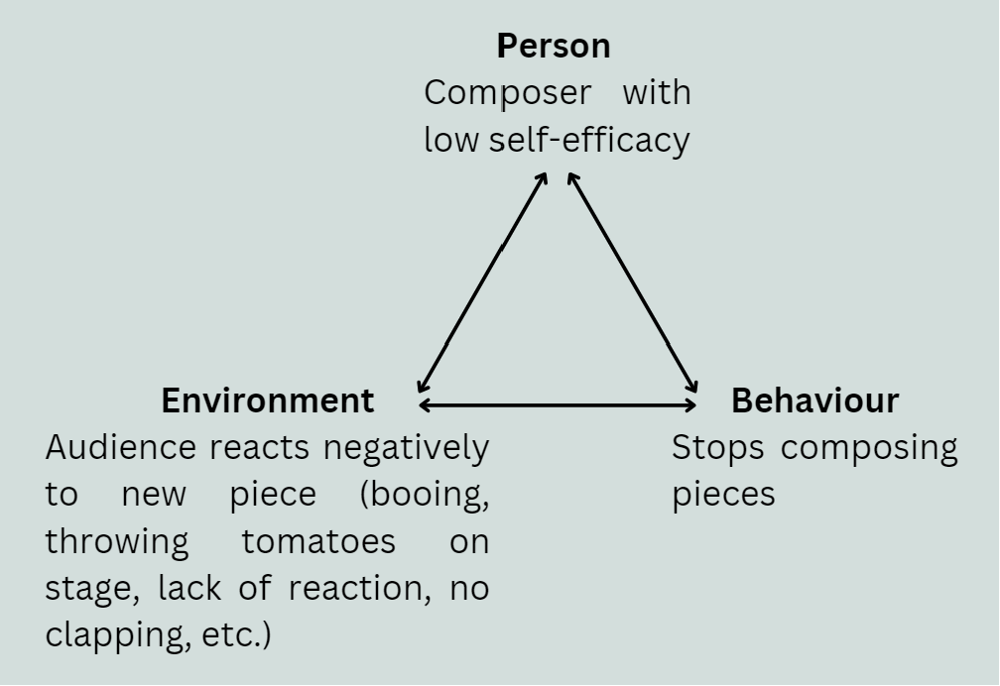
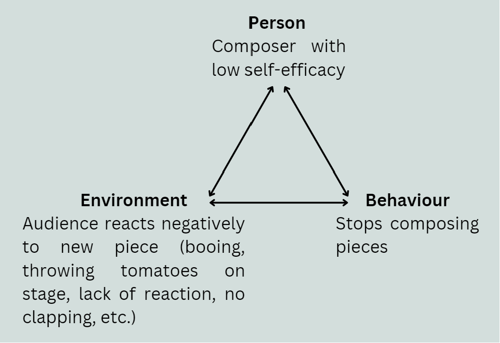

Social cognitivism: composing as a social activity
How does the environment and the people around us influence our learning? This is what social cognitivism attempts to address. Social cognitivism is a branch of cognitivism based on the fact that our changes in mental processes occur through observing others, practicing skills that taught by others, and then getting feedback about our performance from others (Schunk, 2001). In essence, when we pay attention to people's actions, we can better remember them and thus store this information in long-term memory (Lecture 5). Learning in social cognitivism is often defined by our experiences, including other people we encounter or inspire us as well as our cultural context. Other composers, whether they are teachers or some of the great composers of the past, teach us methods of composition that we can learn from (details here). Not getting any feedback on your compositions might not allow you to learn as much because you don't get advice on what you can focus your attention on next time you try to compose, so learning becomes a lot harder without this outside perspective.
Good feedback on a piece reinforces the composer's self-efficacy and therefore, will be more likely to compose more pieces in the future. This interaction between the learner, their environment, and a learner's behaviour can be visualized as follows (Lecture 5):
 

Social cognitivism is unique because it places the focus on the learner AND the people that interact with the learner, as opposed to just what goes on inside the learner's mind, like in cognitivism (Lecture 5). The emphasis on the learner also means that it is the learner that has control over what they chose to learn, unlike behaviourism which would claim that we need to rely on punishments, rewards, or external stimuli to learn, which will often be something that is controlled externally. When learners have control over what and how they learn, they will be a lot more motivated to engage in the learning process.